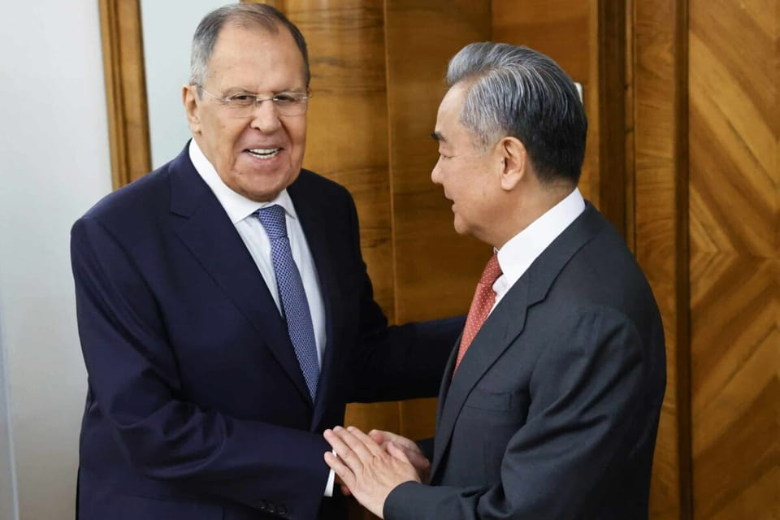

世界苦茶12月05日新闻 | 32条 | 黎智英健康恶化引关注

黎智英健康恶化引关注 | 近百中国军舰在东部海域大规模集结 | 特朗普暂停对中国国安部的相关制裁 | 马杜罗与特朗普通话
苦茶数据
美元兑人民币：7.06（昨日7.06，前日7.06）
美元兑日元：154.89（昨日154.95，前日155.69）
上证指数：3902（昨日3875，前日3878)
标普500指数：6857（昨日6854，前日6829）
比特币：92105（昨日92438，前日93536）
布伦特原油：63.24（昨日63.34，前日62.51）
中国新闻
• 黎智英子女称父亲健康恶化 港府指歪曲事实。
香港壹传媒集团创办人黎智英子女接受媒体采访，称父亲狱中健康持续恶化，深表担忧，港府驳斥指相关报道歪曲事实。目前在美国为父亲争取国际支持的黎智英女儿黎采告诉法新社，自己几个月前探监，父亲“明显瘦了很多，身体比过去虚弱得多”“指甲变色、脱落；牙齿也被蛀蚀”。黎智英子女说，父亲患有糖尿病，香港夏天酷热，而他被单独囚禁在没有空调的牢房。香港特区政府星期三发表声明，强烈谴责法新社等相关报道，指报道污蔑香港法治，黎智英在狱中一直获得适切治疗和待遇。对于黎采提到，狱方不允许身为虔诚天主教徒的父亲领受圣体，并以小动作试图打击他，声明反驳说，惩教署安排专职教士按黎智英意愿提供宗教服务。
• 陆经小三通遣返十涉诈台人 台陆委会称通报延迟未循共打机制。
中国大陆警方星期三经小三通厦门—金门航线，将10名涉诈台籍人士分两批搭船遣送金门。台湾政府的大陆委员会表示，这次遣送并非外传的没有通报，但确实时间较慢，和过去两岸共同打击犯罪机制不太一样，“虽然不满意，但还是要务实处理”。小三通是台海两岸自2001年1月2日起开始实施的小型三通模式，范围是福建与金门、连江之间进行小规模的通商、通航和通邮。据台湾《联合报》报道，大陆公安部门星期三晚间突然从小三通管道，将10名在柬埔寨犯下诈欺案、被送往大陆服刑期满的台籍人士送返金门。报道称，金门方面事前未接获基层通报，是航商察觉异常告知，台湾移民署与港口警察才提前部署，逐一查核身分，因多数无证件且部分为通缉犯。
• 香港200多栋维修中高楼 被令周末或之前拆除棚网。
香港大埔宏福苑火灾造成逾百人死亡，当局周三下令全港200多栋正进行大维修工程的高楼，必须在星期六或之前全部拆除棚网。受访学者认为，有关措施可以确保公共安全，但日后也要对防火方面的违规行为予以严惩。宏福苑早前发生五级火，不合规的棚网是造成火灾迅速蔓延的原因之一。香港保安局局长邓炳强和发展局局长宁汉豪周三会见媒体，讨论了居民区棚网检测报告涉嫌造假的问题。邓炳强说，怀疑有居民住宅大楼进行维修时使用的棚网可能用了虚假文书，涉及柴湾峰华邨和炮台山富泽花园，并指两个居民楼的棚网证书报称由山东一家公司生产，并获“国家劳动保护用品质量监督检验中心”或“滨州市检验检测中心”发出棚网阻燃合格检测报告。
• 路透：近百艘中国军舰在东部海域大规模集结。
路透社4日引述多名人士说法，称中国正在东亚海域部署大量军舰及海警船，且数量一度超过100艘，创下迄今为止最大规模的海上武力展示。此前，台湾媒体曾引述国安人士称，北京可能会在本月中旬举办大规模军演。每年底为中国解放军传统军演旺季，但截至目前，北京并未官宣任何大型演习计画。路透社周四援引东亚地区四名安全官员说法指，中国船只集结范围从黄海南部、经东海、南海，延伸到太平洋海域。消息人士称，部分中国船舰与战机在该区域进行了对外国船只的模拟攻击，并演练了防止外部势力在冲突发生时派遣增援的“拒止作战”。
• 习近平敦促埃马纽埃尔·马克龙“站在历史正确的一边”。
习近平对马克龙表示，中法需要相互“理解和支持” 两人在北京会晤，就“坦诚而富有成效”的对话达成一致，并签署了涉及核电到熊猫等领域的12项协议。会谈后，习近平对记者表示，双方的讨论是“友好、坦诚和富有成效的”。他称双方一致认为，两国“应坚持多边主义，站在历史正确一边，坚持平等对话和开放合作，充分彰显中法全面战略伙伴关系的战略价值和全球影响力”。他还表示，两国应在“外部环境出现变化的情况下”体现大国的独立性和战略视野。“在涉及对方核心利益和重大关切的问题上，我们应相互理解和相互支持，”他说。
• 民调显示大多数欧洲人希望对美中保持同等距离。
约55%受访者不愿依附任一超级大国，48%将特朗普视为“欧洲的敌人”。一项周四公布的民调显示，大多数欧洲人希望在美国和中国之间保持平等距离，而不是在两强之间选边站队。根据法国杂志Le Grand Continent发布的“欧元大炮”调查结果，仅有4%的欧洲受访者会优先与中国结盟，55%的人则更倾向于在两国之间“保持相同距离”。在9个欧盟成员国的受访者中，有五分之一更倾向于与美国结盟，高比例出现在西班牙——这或许令人惊讶，考虑到过去两年其政府一直与北京保持密切关系。
• 港府强硬回应公众愤怒：打击质疑声音、抓捕要求追责人士。
港府强硬回应公众愤怒：打击质疑声音、抓捕要求追责人士 香港数十年来死伤最严重的火灾甫一扑灭，香港当局便开始着手应对另一件事：公众对政府的愤怒。至少两人因为要求政府在宏福苑大火中承担更多责任被香港警方国安处逮捕。这场火灾吞噬了七幢住宅楼，造成至少156人死亡。两人中一人是曾经当选区议员的张锦雄，他在Facebook上批评当局对火灾的应对，被指控在网上煽动对政府的仇恨。另一人是24岁的大学生关靖丰，他在火灾现场附近派发传单，呼吁对这场灾难进行独立调查。警方拒绝就他们的被捕置评。
印太新闻
• 新加坡法院维持对反对党领袖普里塔姆·辛格的有罪裁决。
新加坡反对党领袖普里塔姆·辛格对被判向议会委员会撒谎的有罪裁决提出的上诉遭驳回。今年二月，辛格因两项与他处理前党内女议员莱莎·汗有关的指控被罚款1.4万新元。莱莎·汗曾承认在议会撒谎。周五在一场公众席位爆满的简短听证中，法官表示辛格的定罪有证据支持。作为主要反对党——工人党领袖的辛格表示对判决“感到失望”，但“完全且无保留地”接受裁决。听证后他在法庭当场缴纳了罚款，并对记者说：“干脆一并办了。” 尽管被定罪，辛格仍保留议席。他周五表示将与同僚一道继续为新加坡民众服务。工人党是现任国会中唯一的反对党，持有99席中的12席。
• 日本的高市并非靠政治取胜，而是凭借她的风格和“工作、工作、工作”口号赢得了粉丝。
日本首相高市早苗那句“工作，工作，工作，工作，工作”要为国家拼搏的誓言，被评为年度流行语，体现了这位日本首位女领导人为了登上高位所付出的努力。这位极端保守派的高市在十月当选执政的自民党党首时说出了这句话。起初，许多人对她的勤奋精神既担忧又表示支持。在一个以长工时着称的国家，尤其是对同时还承担家务和照护责任的女性而言，加班过劳是一个敏感话题。这一表彰引发了褒贬不一的反应，有人将其解读为讽刺。高市本周在接受一家民间委员会的颁奖时表示，她只是想强调自己的热情。“我无意鼓励他人过劳，也不认为长时间工作是一种美德，”高市说。
• 日本2025年出生人数或跌至66.5万人，创新低。
预计日本出生人数的降幅将收窄，从2022~2024年的5%区间降至3%区间 | 预计2025年在日本出生的日本儿童人数将比上年减少3.0%，降至66.5万人左右。连续2年跌破70万人，创历史新低。日本还看不到扭转少子化的道路。日本综合研究所的首席研究员藤波匠根据截至2025年11月公布的人口动态统计进行了估算。出生人数将跌至有可比数据的1899年以来的最低水准。自「团块次代」陆续超过生育适龄期的2016年以来，日本的出生人数连续10年减少。
• 日本最早2026年度成立国家情报局。
为了强化情报收集和分析职能，日本政府和执政党计划最早2026年度成立「国家情报局」。国家情报局将起到把日本各省厅收集的情报汇总至首相官邸的指挥中心作用。将在2026年的例行国会上提交相关法案。预计法案的核心内容为：把设在内阁官房的内阁情报调查室升级为国家情报局、新设国家情报局局长职务、设立由首相等人参加的国家情报会议。国家情报局的定位与作为外交和国家安全保障领域政策指挥中心的国家安全保障局同级。将在日本首相官邸的主导下致力于强化情报体制。着手创设国家情报局的背后原因是。
• 高市政府计划26年全面解禁防卫装备出口。
澳大利亚决定采购日本的「最上」型护卫舰，日本高市早苗政府计划在2026年上半年取消防卫装备品的出口仅限于无杀伤能力的「5类别」这一条件。此举旨在通过向同盟国和志同道合的国家提供装备，来强化国家安全保障领域的合作。这一举措不仅有助于日本国内防卫产业扩大市场，还能通过企业之间的竞争和合作，为可应用于民用领域的新技术的诞生创造机会。日本自民党安全保障调查会于12月1日召开了以撤销5类别的装备出口限制条件为目标的研讨会。自民党与日本维新会在10月签署的联合执政协议书中明确写明，将在2026年的例行国会期间撤销相关限制条件。
科技新闻
• 参议员提出法案，阻止特朗普放松对向中国出售人工智能芯片的限制。
一群跨党派的美国参议员，包括著名共和党“对华强硬派”汤姆·科顿，周四公布了一项法案，旨在阻止特朗普政府放宽限制北京获取人工智能芯片的规定，为期两年半。该法案名为SAFE CHIPS法案，由共和党参议员皮特·里基茨和民主党参议员克里斯·库恩斯提出。法案将要求主管出口管制的商务部在30个月内拒绝任何来自中国、俄罗斯、伊朗或朝鲜的买家获取比他们当前被允许获得的更先进的美国人工智能芯片的许可。此后，商务部必须在任何拟议规则变更生效前一个月向国会通报。
经济新闻
• 全球独角兽企业500强 中国150家上榜。
2025年全球独角兽企业500强榜单星期三公布，总估值达39.14万亿元，较去年增加超过三成，中国共有150家企业入榜。综合央视网和新华报业网星期四报道，美国的SpaceX和中国的字节跳动分别位居500强第一和第二名，估值为2.8万亿元和2.21万亿元。从行业看，独角兽企业主要分布在金融科技、信息科技及先进制造等赛道。今年尤其突出的一点，是人工智能独角兽企业从20家增加到36家，而中国AI独角兽企业从两家增加到九家。其中，深度求索以1.05万亿元估值，在全球排行第六。在企业数量上，金融科技仍居第一，共有98家，估值合计6.46万亿元。AI独角兽企业虽然只有36家，其估值达6.83万亿元。
• “港版淡马锡”港投公司去年实现投资收入23.45亿港元。
香港投资管理有限公司星期四公布成立以来的首份年报，在2024年实现投资收入23.45亿港元，取得营运利润22.52亿港元。这家被业界誉为“港版淡马锡”的投资机构，初始资产管理规模为620亿港元。截至2024年12月31日，包含累计收益在内，其总资产管规模增至640.07亿港元。从投资布局来看，硬科技领域投资占比高达71%，生命科技与新能源和绿色科技分别占13%和11%。按地域分布，中国大陆占62%，香港占34%。截至今年10月底，港投公司已投资超过150个项目，其中两家企业已经在香港上市，另有10多家已提交或准备今年内提交在港上市申请。这些已上市，已提交或准备提交上市申请的10多家公司中。
• 美国首次申请失业救济人数降至19.1万，为2022年9月以来最低。
在感恩节周，美国申请失业救济的人数降至三年多来的最低水平，可能会使美联储即将就利率作出的决定更为复杂。劳工部周四报告，截止11月29日当周，申领失业救济的人数从前一周的21.8万降至19.1万。自2022年9月24日当周的18.9万以来，这是最低水平。数据提供商FactSet调查的分析师此前预测初请将为22.1万。Nationwide首席经济学家凯西·博斯詹西奇表示，感恩节假期常常会扭曲失业救济申领数据，导致一些可能失业的人推迟申请。不过，低申请人数也表明总体裁员仍然有限，尽管有些引人注目的裁员公告。
• 「坚固的防波堤」：中国央行誓言抵御外部冲击。
央行行长潘功胜表示，政策必须以国内经济为重，警惕可能破坏长期稳定的“过度政策摇摆” 中国人民银行行长潘功胜强调，中国需保持健全的货币体系，具备对外部冲击和系统性风险的抗御能力，并在一场关键政策会议召开前释放出以稳为主的信号。潘功胜在周四为中共《人民日报》撰写的社论中表示，货币政策必须在内外压力之间取得平衡，“以国内经济金融状况为主”，同时也要考虑来自其他经济体的“溢出效应”。人民银行行长还强调“持续完善人民币汇率形成机制”的重要性。“确保汇率在宏观经济调节和国际收支中发挥自动稳定器作用，为实施具有自主性和有效性的货币政策创造有利条件，”潘功胜写道。
• 媒体：特朗普政府暂停中国国安部相关制裁 以免影响贸易停火。
2025年12月4日据《金融时报》报道，知情人士称，美国政府暂停因“盐台风”黑客行动制裁中国国安部，以避免美中贸易停火受到影响。这引起对华鹰派的不满。据《金融时报》12月4日引述知情人士称，美国暂停因“盐台风”间谍活动对中国国安部实施制裁，以避免特习会达成的贸易“休战”受到威胁。报道引述几名美国官员以及知情人士称，美国政府也将避免对中国实施新的出口管制。特朗普和习近平10月在韩国会晤，双方达成贸易停火协议。《金融时报》引述知情人士称，特朗普政府的对华政策已经转向确保“稳定”，直到美国降低在稀土方面对中国的依赖。
• 敦促美墨加协定建立联合机制，应对中国的国家安全威胁。
在美国贸易听证会上，鼓励美、墨、加监管“务实且具体的方案”以加强针对中国的经济规则 美国贸易代表办公室周三召开的听证会——这是在明年七月对这项自由贸易协议进行联合审查前的首次公开会议——拉开了为期三天的证词征询，超过140名来自企业、智库、学术界和倡导组织的代表将出席作证。“如果不能拿出一个务实且具体的计划来确保经济一体化能够降低而非加剧经济与国家安全风险，就无法提出一个关于经济一体化价值的战略性论断，”新美国安全中心资深研究员艾米丽·基尔克里斯在书面陈述中表示。她建议，三国应成立一个“经济安全委员会”来监管此类承诺的落实。
俄乌战争
• 普京表示，俄罗斯要么以武力夺取顿巴斯，要么乌克兰军队将撤离。
普京表示俄方将以武力夺取顿巴斯，否则乌军将撤离 俄罗斯总统弗拉基米尔·普京再次警告称，乌克兰军队必须撤出乌克兰东部的顿巴斯地区，否则俄罗斯将会夺取该地区，并拒绝就如何结束在乌克兰的战争作出任何妥协。“要么我们用武力解放这些领土，要么乌克兰军队将离开这些领土，”他在接受《印度今日》采访时说。莫斯科控制了顿巴斯约85%的地区。乌克兰总统弗拉基米尔·泽连斯基已排除割让领土的可能。普京的言论出现在唐纳德·特朗普总统表示其谈判代表在莫斯科举行周二会谈后认为俄罗斯领导人“愿意结束战争”。特朗普的特使史蒂夫·维特科夫曾在莫斯科，他预计将在佛罗里达与乌克兰团队会面。
• 普京表示，他无法同意美国关于结束乌克兰战争提案中的某些条款。
普京称美方结束乌克兰战争提案中有无法接受之处 俄罗斯总统弗拉基米尔·普京表示，美国提出的某些结束乌克兰战争的方案对克里姆林宫而言不可接受，他周四发表的言论显示，任何协议仍有相当距离。美国总统唐纳德·特朗普已发起自俄对邻国发动全面入侵近四年来最为强烈的外交推动，试图停止战斗。但该努力再次遇到难以调和的要求，尤其是在乌克兰是否必须向俄罗斯割让土地以及如何确保其免受莫斯科未来侵略方面存在分歧。
• 《明镜》报道，泄露的领导人通话显示，马克龙警告称美国可能会“背叛”乌克兰。
根据一份欧洲领导人就如何保护基辅进行战略讨论的通话录音稿泄露，法国总统埃马纽埃尔·马克龙警告称，美国可能即将“背叛”乌克兰。这次通话发生在周一，参与者包括马克龙、德国总理弗里德里希·默茨、北约秘书长马克·吕特、芬兰总统亚历山大·斯图布、乌克兰总统弗拉基米尔·泽连斯基等，通话细节由德国杂志《明镜》刊出，记录显示领导人讨论了美国主导的与基辅和莫斯科的和平谈判。根据《明镜》，马克龙表示：“存在美国在领土问题上背叛乌克兰的可能性，而在安全保障方面没有明确性，”并补充说这对泽连斯基构成“极大危险”。
• 乌克兰将莫迪与普京的会谈视为对俄罗斯石油生命线的考验。
俄罗斯总统弗拉基米尔·普京在莫斯科克里姆林宫与印度总理纳伦德拉·莫迪会面后的周四至周五，对印度进行访问。此次访问是自2022年俄罗斯入侵乌克兰以来普京首次访印，克里姆林宫表示，普京与莫迪将讨论他们“特别优待的战略伙伴关系”。此次行程将检验莫迪在维护印度与莫斯科的能源与防务关系方面会走多远——他正面临来自基辅、华盛顿和欧洲主要城市的压力，要求其帮助遏制俄罗斯的战争努力。对普京而言，此行是一个展示他并不孤立，并巩固与全球南方大国在石油与武器领域重要联系的机会。
• 欧盟就永久停止进口俄罗斯天然气达成协定。
联盟的主要机构12月3日就2027年11月之前永久停止进口俄罗斯天然气达成了大致协议。此举旨在剥夺持续侵略乌克兰的俄罗斯的作战能力，向其施加压力，促使其接受和平方案。欧盟执行机构欧洲委员会的提案在由成员国部长组成的部长理事会和立法机构——欧洲议会上达成了大致共识。该提案将在正式批准后实施。首先，各成员国将在2026年12月底之前逐步停止进口液化天然气。来自俄罗斯的管道天然气供应将在2027年9月底之前停止。如果成员国的储备较少，将设定一个到2027年10月底的宽限期。
世界新闻
• 一位海军上将作证称赫格塞斯并未下达“全部杀光”的命令，美国议员称。
多名美国议员表示，一名美国海军上将作证称国防部长皮特·赫格塞思并未下达“全部杀光”的命令。多名民主党和共和党议员在观看了9月2日涉事可疑毒品船的双重打击事件录像并在非公开听证会上听取弗兰克·布拉德利上将的陈述后作出上述肯定。众议院议员以及随后参议院的通报正值外界继续怀疑对疑似毒品船使用军事武力的合法性之时。白宫表示布拉德利上将对这些打击负责，且他的行为符合法律。众议院情报委员会资深议员，民主党人吉姆·海姆斯说，布拉德利上将赢得了他的尊重，“也应该得到我们所有人的尊重”。他补充道：“但我在那个房间里看到的是我从政以来见过的最令人不安的事情之一。”
• 特朗普主持刚果与卢旺达领导人签署和平协议。
特朗普在华盛顿主持刚果与卢旺达领导人签署和平协议 刚果民主共和国与卢旺达的领导人在美国总统唐纳德·特朗普于华盛顿主办的峰会上签署了一项旨在结束该地区长期冲突的和平协议。峰会前，资源丰富的刚果东部政府军与被认为得到卢旺达支持的叛军之间的战斗升级。刚果军方指责对方试图“破坏”和平进程，但M23叛军称军队发动了违反停火的攻势。年初，M23在一场攻势中占领了刚果东部大片地区，造成数千人死亡，更多人被迫流离失所。在新近更名为“唐纳德·J·特朗普和平学院”的活动开始时，特朗普称和平仪式是“非洲和世界的伟大日子”。“我对两位领导人都有很大信心，”他补充道，“我们将履行这些承诺。我知道他们会履行并贯彻协议。
• 纽约时报因五角大楼对媒体的打压起诉赫格塞斯。
《纽约时报》就五角大楼对新闻通行的新限制向国防部提起了一起风险极高的诉讼。该诉讼于周四上午在华盛顿特区联邦法院提交，被告包括国防部，国防部长皮特·赫格塞斯和五角大楼首席发言人肖恩·帕内尔。诉讼要求废止于十月实施的一项新政策，该政策促使五角大楼驻军记者交回记者证而非签署限制条款。时报发言人查理·斯塔特兰德表示：“该政策试图对政府不喜欢的报道施加控制，侵犯了新闻自由在宪法第一修正案和第五修正案下寻求信息的权利。”他补充说：“《纽约时报》将像以往面对反对监督与问责的各届政府一样，坚决捍卫这些权利免受侵犯。
• 冯·德莱恩与外交欺诈丑闻划清界限。
乌尔苏拉·冯德莱恩正与笼罩欧盟外交机构的腐败指控保持划清界限，工作人员表示对委员会主席而言这不是问题。比利时当局周二清晨突袭并拘留了欧盟前首席外交官费德里卡·莫盖里尼和前欧洲对外行动署署长斯特法诺·桑宁诺后，委员会官员将此事驳为对外行动署的问题——并指出尽管桑宁诺今年早些时候在委员会担任要职，但调查可追溯到他此前的职务。“这不是委员会在撇清关系，而是另一个机构正在被调查，”一位欧盟官员说。
• 委内瑞拉总统确认在日益升级的紧张局势中与唐纳德·特朗普通话。
委内瑞拉总统尼古拉斯·马杜罗周三首次谈及他与美国总统唐纳德·特朗普的一次通话，称通话以“尊重的语气”进行，但在美军在加勒比海大规模部署舰机并对疑似涉毒船只发动致命攻击之际，他未透露细节。
• 墨西哥总统谢因鲍姆的法律顾问被选为新总检察长。
墨西哥总统谢因鲍姆的法律顾问被选为新任总检察长 墨西哥城——周三，墨西哥参议院选出长期担任总统克劳迪娅·谢因鲍姆法律顾问的埃内斯蒂娜·戈多伊为该国下一任总检察长。此项任命发生在亚历山德罗·格茨·马内罗上周辞职之后。戈多伊自那时起一直以临时身份代理该职务。此前，70岁的戈多伊自2024年10月谢因鲍姆上任以来一直担任其法律顾问。谢因鲍姆任墨西哥城长时，戈多伊也曾担任墨西哥城检察官。谢因鲍姆周三早些时候表示，她的候选人短名单均为女性。“这是女人的时代，”她在每日新闻发布会上说。
• 特朗普总统的蔑视令美国最大的索马里裔社区震惊。
特朗普总统对索马里人的蔑视震惊了该国最大的索马里社区 美国伊斯兰关系委员会明尼苏达分会的成员在该州为可能针对索马里移民的执法行动做准备之际向记者发表了讲话 明尼阿波利斯——即便对一位长期明确表示不喜欢索马里的人来说，白宫周三最新一轮的蔑视言论仍令该国最大的索马里社区震惊。“他们一无是处。我不想让他们留在我们国家，”唐纳德·特朗普总统在周二的一次内阁会议上对记者说。“我们可以往一个方向走，也可以往另一个方向走，如果我们继续把垃圾引进我们国家，我们就会走错路。”周三，他重申道：“索马里人应该出去。”
• 美国国务院将以“审查”为由拒发签证给事实核查员及其他人士。
国务院将以“审查”为由拒签事实核查员等人员 国务院正指示工作人员拒绝曾从事实核查、内容审核或其他被特朗普政府视为“对美国人言论进行审查”行为的人员的签证申请。周二发出的内部备忘录主要针对H-1B高技能工作签证的申请者，H-1B签证经常被科技公司等行业使用。